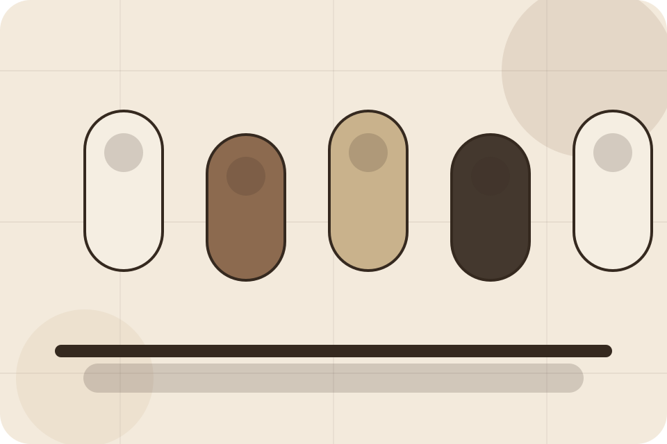
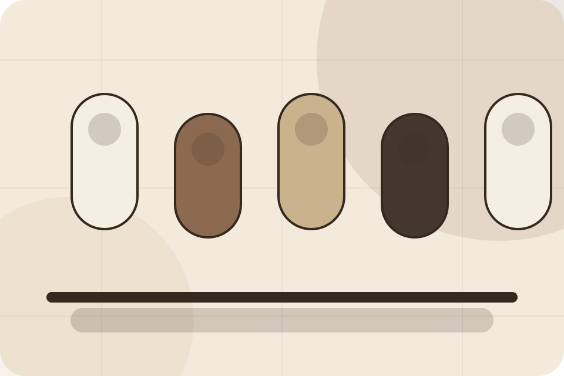
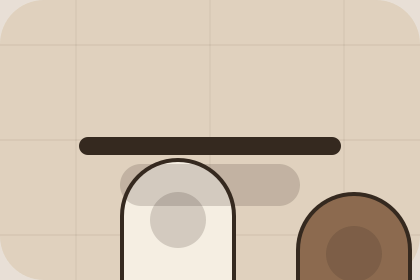

Contact / 01
Contact by Skin
Contact shaped for beauty, cosmetics & aesthetic products decisions.
Contact opens as a clear beauty decision hub: what Skin offers, who it helps, why it matters, and which route to take first.
The first screen combines positioning, proof, primary action, and fast internal navigation, so people can act immediately or compare the rest of the contact route with context.
Browse quicklyCompare clearlyAsk availability
Muted product education hero
Build a routine
Select the closest route and Skin keeps the next step, proof, and follow-up expectation aligned with self-care confidence.

Contact / 02
Orders
Orders makes the contact path concrete: what to send, how the response works, and what Skin needs before visitors build a routine.
The section reduces contact friction by naming the channel, expected detail, privacy path, and response expectation instead of dropping visitors into a generic form.
Build RoutineDetails
What information helps Skin respond with a useful answer instead of a generic reply.
Timing
How the visitor should think about response, urgency, location, or availability.
Reply
The expected next message keeps scope, timing, and the first practical step clear.
Contact / 03
Advice
Advice makes the contact path concrete: what to send, how the response works, and what Skin needs before visitors build a routine.
The section reduces contact friction by naming the channel, expected detail, privacy path, and response expectation instead of dropping visitors into a generic form.
Build Routine- 01
Details
What information helps Skin respond with a useful answer instead of a generic reply.
- 02
Timing
How the visitor should think about response, urgency, location, or availability.
- 03
Reply
The expected next message keeps scope, timing, and the first practical step clear.
Contact / 04
Wholesale
Wholesale makes the contact path concrete: what to send, how the response works, and what Skin needs before visitors build a routine.
The section reduces contact friction by naming the channel, expected detail, privacy path, and response expectation instead of dropping visitors into a generic form.
Build RoutineSkin keeps wholesale practical: send the key details, choose the right contact route, and know what kind of reply to expect.
Build RoutineContact / 06
Form
Form makes the contact path concrete: what to send, how the response works, and what Skin needs before visitors build a routine.
The section reduces contact friction by naming the channel, expected detail, privacy path, and response expectation instead of dropping visitors into a generic form.
Build RoutineSkin keeps form practical: send the key details, choose the right contact route, and know what kind of reply to expect.
Build Routine
Contact / 08
Response
Response makes the contact path concrete: what to send, how the response works, and what Skin needs before visitors build a routine.
The section reduces contact friction by naming the channel, expected detail, privacy path, and response expectation instead of dropping visitors into a generic form.
Build Routine- 01
Details
What information helps Skin respond with a useful answer instead of a generic reply.
- 02
Timing
How the visitor should think about response, urgency, location, or availability.
- 03
Reply
The expected next message keeps scope, timing, and the first practical step clear.
Contact / 09
Submit
Submit makes the contact path concrete: what to send, how the response works, and what Skin needs before visitors build a routine.
The section reduces contact friction by naming the channel, expected detail, privacy path, and response expectation instead of dropping visitors into a generic form.
Build RoutineSkin keeps submit practical: send the key details, choose the right contact route, and know what kind of reply to expect.
Build RoutineContact / 10
Build Routine
Skin closes the contact route with a clear action, a quick reminder of the value, and a low-friction way to build a routine.
Visitors who are ready can use the primary action. Visitors who are still comparing can scan the section links, proof, and support routes before they build a routine.
Build RoutineThe final block keeps the choice simple: act now, compare one more proof route, or send enough detail for a focused response.
Build Routineself-care confidence
Build Routine
A routine site with restrained product education, ingredient notes, tactile cards, and consultation routes. Contact ends with a direct path to build a routine, plus enough context for visitors who still need to compare.

Build RoutineNotes
Ingredient suitability varies by person; patch testing and professional advice may be needed for sensitive users.